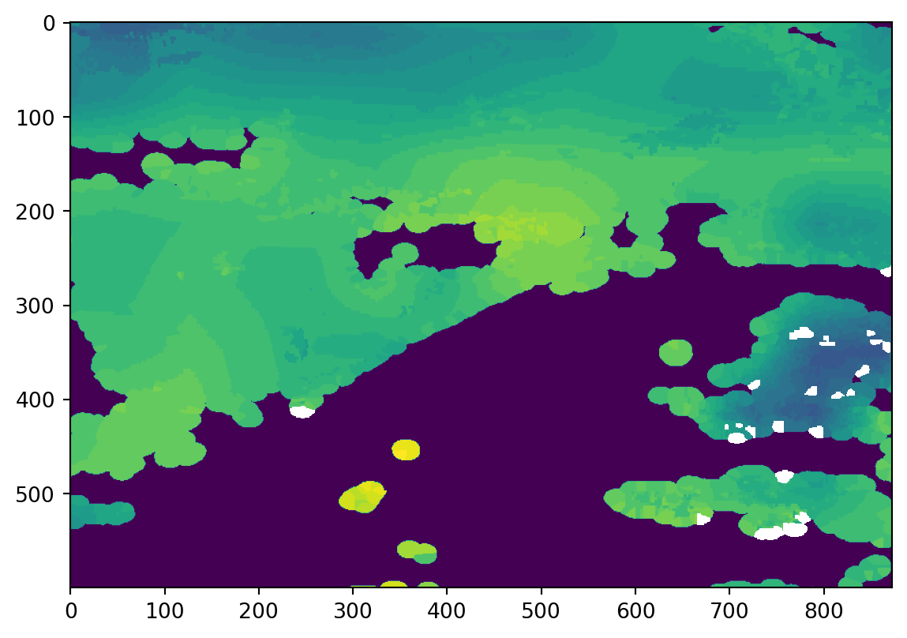

import numpy as np
from osgeo import gdal
from osgeo import osr
import pyresample as pr
from pybufr_ecmwf.bufr import BUFRReader
import matplotlib.pyplot as pltTranslating EUMETSAT’s .bfr files to GTiff
BUFR
TIFF
Python
Python code to translate EUMETSAT’s BUFR datasets to GTiffs.
I recently came across the EUMETSAT Regional Instability Index dataset, which is shipped in the less known BUFR format. In this tutorial, I am going to show how you can use Python to translate .bfr files to .tiff files. Besides the GDAL library for writing, we will also need the pyresample and the pybufr_ecmwf libraries. pyresample currently does not support the .bfr format natively. However, it is very likely to be supported in the future.
The BUFR format is a standardized format defined by the World Meteorological Organization (WMO). It stands for Binary Universal Form for the Representation of meteorological data. It is a self-describing format, shipping data together with metadata to be used by end-users. Within a .bfr file, we find several messages, each of them having a specific number of entries. We will use the functionality of the pybufr_ecmwf library to read in the data.
file = "MSG2-SEVI-MSGRIIE-0101-0101-20160526000000.000000000Z-20160526000602-1403456.bfr"
# read the file
bufr = BUFRReader(file, warn_about_bufr_size = False, expand_flags = False)
# display number of messages
print("Number of messages: "+ str(bufr.num_msgs))
# initiate list with parameter names
names_units = []
for m, msg in enumerate(bufr):
names_units.append(msg.get_names_and_units())
# show parameter names and units
print('\n'.join(map(str, names_units[0][0])))
# close file
bufr.close()Number of messages: 90SATELLITE IDENTIFIER
IDENTIFICATION OF ORIGINATING/GENERATING CENTRE (SEE NOTE 10)
SATELLITE CLASSIFICATION
SEGMENT SIZE AT NADIR IN X DIRECTION
SEGMENT SIZE AT NADIR IN Y DIRECTION
YEAR
MONTH
DAY
HOUR
MINUTE
SECOND
ROW NUMBER
COLUMN NUMBER
LATITUDE (HIGH ACCURACY)
LONGITUDE (HIGH ACCURACY)
SATELLITE ZENITH ANGLE
K INDEX
KO INDEX
PARCEL LIFTED INDEX (TO 500 HPA)
MAXIMUM BUOYANCY
PRECIPITABLE WATER
PER CENT CONFIDENCE
PRESSURE
PRESSURE
PRECIPITABLE WATER
PRESSURE
PRESSURE
PRECIPITABLE WATER
PRESSURE
PRESSURE
PRECIPITABLE WATERBased on the above output, we can decide which parameters we are interested in and which metadata we will need. Say we are only interested in the parameter K Index. We can see that the index for this dataset is 16. Also, since we are interested in writing a .tiff as output, the datasets of latitude and longitude will be of interest to us (index 13 and 14, respectively). Note that we are reopening the file once again to start from the very first message.
# initiate arrays
lats = np.zeros([0])
lons = np.zeros([0])
vals = np.zeros([0])
# reopening the file
bufr = BUFRReader(file, warn_about_bufr_size = False, expand_flags = False)
# loop through the messages and sub-entries
for msg in bufr:
for subs in msg:
data = subs.data
lats = np.append(lats, data[:,13])
lons = np.append(lons, data[:,14])
vals = np.append(vals, data[:,20])
# don't forget to close the file
bufr.close()
vals = np.where(vals == np.max(vals), -9999, vals)With this loop, we obtained all the necessary data to create a .tiff file. We have got the values we are interested in and the geographic information of each location’s latitude and longitude data. We can now use the pyresample library to resample our data to a location of interest. Let’s say we are interested in a study area roughly having the extent of France. We can resample to this area by declaring an area definition first.
# define some general properties of our projection
area_id = "France"
description = "Custom Geographical CRS of France"
proj_id = "France WGS84 geographical"
proj_dict = {"proj": "longlat", "ellps":"WGS84", "datum": "WGS84"}
# define the area's extent in degrees and desired resolution
llx = -4.9
lly = 42.2
urx = 8.2
ury = 51.2
res = 0.015 # in degrees
width = int((urx - llx) / res)
height = int((ury - lly) / res)
area_extent = (llx,lly,urx,ury)
area_def = pr.geometry.AreaDefinition(area_id, proj_id, description, proj_dict, width, height, area_extent)
print(area_def)Area ID: France
Description: France WGS84 geographical
Projection ID: Custom Geographical CRS of France
Projection: {'datum': 'WGS84', 'no_defs': 'None', 'proj': 'longlat', 'type': 'crs'}
Number of columns: 873
Number of rows: 600
Area extent: (-4.9, 42.2, 8.2, 51.2)/home/darius/Desktop/website/new/py-env/lib/python3.10/site-packages/pyproj/crs/crs.py:1282: UserWarning: You will likely lose important projection information when converting to a PROJ string from another format. See: https://proj.org/faq.html#what-is-the-best-format-for-describing-coordinate-reference-systems
proj = self._crs.to_proj4(version=version)With this area definition, we can resample our data using the nearest neighbor algorithm and use our defined variables about the location to create a .tiff file as output.
swath_def = pr.geometry.SwathDefinition(lons = lons, lats = lats)
res_data = pr.kd_tree.resample_nearest(swath_def, vals, area_def,
radius_of_influence=16000,epsilon=0.5,fill_value=False)
# create tif output
filename = "bufr2tif.tif"
# number of rows and cols
rows = res_data.shape[0]
cols = res_data.shape[1]
# pixel size
pixelWidth = (area_def.area_extent[2] - area_def.area_extent[0]) / cols
pixelHeight = (area_def.area_extent[1] - area_def.area_extent[3]) / rows
# pixel of origin
originX = area_def.area_extent[0]
originY = area_def.area_extent[3]
# driver
driver = gdal.GetDriverByName("GTiff")
# create file
outRaster = driver.Create(filename, cols, rows, 1, gdal.GDT_Float32)
# set resoultion and origin
outRaster.SetGeoTransform((originX, pixelWidth, 0, originY, 0, pixelHeight))
# create one band
outband = outRaster.GetRasterBand(1)
# Float_64 no data value (or customize)
outband.SetNoDataValue(-9999)
# write the resampled data to file
outband.WriteArray(np.array(res_data))
# create a spatial reference system
outRasterSRS = osr.SpatialReference()
outRasterSRS.ImportFromEPSG(4326)
# write SRS to file
outRaster.SetProjection(outRasterSRS.ExportToWkt())
# clean up
outband.FlushCache()
outband = None
outRaster = NoneNow we can read in the newly created file and look at a simple plot to visualize our result. Note that, in the background, I am using R to generate this plot quickly.
file = "bufr2tif.tif"
ds = gdal.Open(file)
band = ds.GetRasterBand(1)
data = band.ReadAsArray()
data = np.where(data == -9999., np.NaN, data)
plt.imshow(data)<matplotlib.image.AxesImage at 0x7f4afc87fb80>